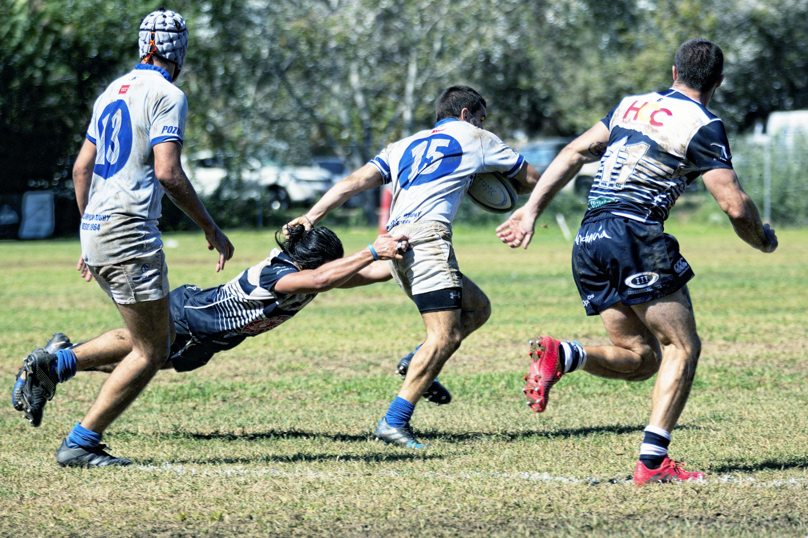

Cultura del béisbol: el latido del pasatiempo favorito de Estados Unidos
Este artículo explora la rica cultura que rodea al béisbol, incluidas sus tradiciones, la participación de los fanáticos y las conexiones emocionales que lo convierten en un deporte querido.
07/15/24